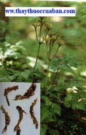

Tên khác
Vị thuốc Hoàng liên, còn có tên Vương liên (Bản Kinh), Chi liên (Dược Tính Luận), Thủy liên Danh vậng, Vận liên, Thượng thảo, Đống liên, Tỉnh Hoàng liên, Trích đởm chi (Hoà Hán Dược Khảo), Xuyên Hoàng liên. Tiểu xuyên tiêu, Xuyên nhã liên, Xuyên liên, Thượng xuyên liên, Nhã liên, Cổ dũng liên, Chân xuyên liên (Trung Quốc Dược Học Đại Từ Điển).
Tên gọi:

Vị này có rễ như những hạt châu liên tiếp kết lại, có màu vàng nên gọi là Hoàng liên (Trung Quốc Dược Học Đại Từ Điển).
Tên khoa học:
Coptis teeta Wall. Họ Hoàng liên (Ranunculaceae).
Tiếng Trung: 黄连
Cây Hoàng liên
( Mô tả, hình ảnh, thu hái, chế biến, thành phần hoá học, tác dụng dược lý ....)
Mô tả:
Cây thảo sống lâu năm, cao độ 30cm. Lá mọc so le, có cuống dài, mọc từ thân rễ trở lên. Phiến lá gồm 3-5 lá chét. Mỗi lá chét lại chia thành nhiều thùy, mép có răng cưa to. Thân rễ hình trụ, nhiều rễ con, màu nâu vàng nhạt, có hình dáng chân gà nên còn gọi là “Hoàng liên chân gà”, chỗ bẻ màu vàng, vị đắng. Hoa màu trắng, mọc ở ngọn cán hoa. Quả gồm nhiều đài, khi chín màu vàng. Hạt màu nâu đen. Ra hoa tháng 10-2 năm sau. Hoàng liên lấy thân, niên túc (cứ mỗi năm đầu rễ sinh ra một đốt, đầy bốn năm thì gọi là niên túc),Cây hoang ở vùng núi cao trên 1.500m. Ở Việt Nam cây mọc hoang ở trên dẫy Hoàng liên Sơn rất nhiều. Thường trồng bằng hạt vào cuối mùa xuân.
Thu hái, sơ chế:
Thu hái vào tháng 10-12, thời vụ thu hoạch thích hợp nhất là vào tháng 11 trước tiết Lập đông, thường dùng loại 2-3 năm hoặc hơn. Lúc này rễ Hoàng liên đã chắc nặng, chứa ít nước, tỉ lệ khô cao. Khi sấy khô nên dùng buồng sấy, sấy khô xong, muốn làm sạch rễ con, làm đất và cuống lá cần phải cho vào ống xóc. Ống xóc là một dụng cụ đan bằng tre, có thể làm to hoặc nhỏ. Trước tiên cho Hoàng liên vào ống, đậy nắp lại, nếu ống nhỏ thì hai người cầm hai đầu ống đu đưa, làm cho Hoàng liên bên trong cọ sát vào nhau, khiến các rễ con, cuống lá, bùn đất bị rụng ra, thì thu được Hoàng liên sạch sẽ, đẹp, phẩm chất cao. Xóc xong, đổ tất cả ra sàng,đầu tiên dùng sàng mắt to sàng lấy Hoàng liên, sau đó dùng sàng mắt nhỏ, sàng bỏ đất cát đi, òn cuống lá lấy về, cũng xếp ngay ngắn thành các bó nhỏ, chặt thành đoạn ngắn 1,5cm, phơi khô (Trung Dược Đại Từ Điển).
Phần dùng làm thuốc:
Thân rễ (Rhizoma Coptidis). Màu sắc bình thường, rễ mập mạnh, ít rễ râu, cứng, chắc, khô, không vụn là tốt.
Mô tả dược liệu:
Thân rễ khô hình trụ có nhiều rễ con cong queo, có nhiều đốt khúc khuỷu nhiều nhánh không quy tắc, dài chừng 32-65mm, thô chừng 3,2 - 3,5mm, mặt ngoài màu vàng nâu hoặc nâu vàng nhạt, tận cùng phíatrên thường phân nhánh phình lớn, có vết sẹo của cuống lá ở thân và gốc, đồng thời có những lá vẩy nhỏ. Chất cứng. Bẻ ngang cứng, mặt bẻ màu vàng tươi đậm. Không mùi vị đắng, ở chính giữa có lỗ nhỏ.
1- Nga mi liên: Có nhiều trong núi sâu của núi Nga mi là một trong những loại mọc hoang rễ thô, mạnh có hình như bàn tay phật nên gọi là ‘Liên vương’, thường sinh trưởng lâu 20-30 năm mới được phát hiện thì phẩm chất cực tốt nhưng sản lượng quá ít.
2- Nhã liên: sản lượng rất nhiều phẩm chất kém hơn Nga mi liên.
3- Vị liên: hình dạng như móng chân gà, nên gọi là “Kê trảo liên”, phẩm chất tương đối kém. Loại ở phía bắc Trường Giang trơn sáng, lông ít, chất cứng, vỏ nhỏ, bên ngoài màu vàng nâu, bẻ ngang bờ bên đỏ vàng. Loại ở phía nam Trường Giang chất xốp vỏ thô, màu nâu, màu vàng nhạt, bẻ ngang màu vàng sẫm.
4- Vân liên: Dài khoảng 32mm, thẳng và bóng, phân nhánh ít. Màu vàng nhạt, dễ bẻ gẫy, mặt bẻ gẫy lớp ngoài màu vàng nâu, chính giữa màuvàng tươi.
Bào chế:
Cho Hoàng liên vào trong túi vải, xát cho sạch lông gĩa mát dùng, hoặc ngâm trong nước tương 2 giờ vớt ra, sấy khô bằng gỗ liễu để dùng (Lôi Công Bào Chích Luận).
Chải sạch rửa tạp chất (không nên ngâm lâu sẽ mất chất), ủ đến vừa mềm, thái mỏng phơi trong râm cho khô (dùng sống) hoặc tẩm rượu sao qua [dùng chín] (Trung Dược Đại Từ Điển).
Bảo quản:
Để nơi khô ráo. Bào chế rồi đậy kín.
Thành phần hóa học:
. Berberin (5,56 – 7,25%), Coptisine, Epiberberine (Yoneda Kaisuke và cộng sự, Shoyakugaku Zasshi 1988, 42 (2): 116).
. Berberrubine (Yoneda Kaisuke và cộng sự, Shoyakugaku Zasshi 1988, 43 (2): 129).
. Palmatine, Columbamine, Worenine, Jatrorrhizine, Magnofoline, Ferulic acid (Phương Kiên Đỉnh, Trung Thảo Dược 1981, 17 (1): 2).
. Obakunone, Obakulactone (Thiên Tân Y Học Viện, Khoa Học Luận Văn Tuyển Biên, Q. 1, 1959: 285).
Tác dụng dược lý:
Tác dụng kháng khuẩn: Hoàng liên và 1 trong các hoạt chất của nó là Berberine, có phổ kháng khuẩn rộng trong thí nghiệm. Có tác dụng ức chế mạnh đối với Streptococcus pneumoniae, Neisseria meningitidis và Staphylococcus aureus. Thuốc có tác dụng ức chế mạnh đối với khuẩn gây lỵ nhất là Shigella dysenteriae và S. Flexneri. Thuốc có hiệu quả hơn thuốc Sulfa nhưng kém hơn Streptomicine hoặc Chloramphenicol. Thuốc không có tác dụng đối với Shigella sonnei, Pseudomonas aeruginosa và Salmonella paratyphi. Nước sắc Hoàng liên có hiệu quả đối với 1 số vi khuẩn phát triển mà kháng với Streptomicine, Chloramphenicol và Oxytetracycline hydrochloride. Nhiều báo cáo khác cho thấy độ hiệu quả khác biệt của Hoàng liên đối với vi trùng lao, nhưng không có tác dụng giống như thuốc INH. Hoạt chất kháng khuẩn của Hoàng liên thường được coi là do Berberine. Khi sao lên thì lượng Berberine kháng khuẩn thấp đi (Chinese Herbal Medicine).
Tác dụng kháng Virus: Thí nghiệm trên phôi gà chứng minh rằng Hoàng liên có tác dụng đối với nhiều loại virus cúm khác nhau và virus Newcastle (Chinese Herbal Medicine).
Tác dụng chống nấm: Trong thí nghiệm, nước sắc Hoàng liên có tác dụng ức chế nhiều loại nấm. Nước sắc Hoàng liênvà Berberine tương đối có tác dụng mạnh diệt Leptospira (Chinese Herbal Medicine).
Tác dụng chống ho gà: Kết quả nhiều nghiên cứu về tác dụng của Hoàng liên đối với ho gà có khác nhau. Một nghiên cứu cho thấy trong thí nghiệm tập trung Hoàng liên ức chế sự phát triển của Hemophilus pertussis cao hơn Streptomycine hoặc Chloramphenicol, ít nhất là thuốc có tác dụng lâm sàng.tuy nhiên, nghiên cứu khác trên heo Hà Lan, cho uống Hoàng liênthì lại không làm giảm tỉ lệ tử vong (Chinese Herbal Medicine).
Tác dụng hạ áp: Chích hoặc uống dịch chiết Berberine cho mèo, chó và thỏ đã được gây mê và chuột không gây mê thấy huyết áp giảm. Liều lượng bình thường, hiệu quả không kéo dài, liều lập lại cho kết quả không cao hơn hoặc lờn thuốc. Hiệu quả này xẩy ra dù tác dụng trợ tim ảnh hưởng đến lượng máu tim gây nên bởi liều thuốc này. Huyết áp giảm dường nhưliên hệ với việc tăng dãn mạch, cũng như có sự gia tăng đồng bộở lách, thận và tay chân (Chinese Herbal Medicine).
Tác dụng nội tiết: Berberine cũng có tác dụng kháng Adrenaline. Thí dụ: đang khi Berberine làm hạ áp thì phản xạ tăng – hạ của Adrenalin giảm rất nhiều nhưng phụ hồi lại nhanh. Berberine cũngdung hòa sự rối loạn của Adrenaline và các hợp chất liên hệ (Chinese Herbal Medicine).
Tác dụng đối với hệ mật: Berberine có tác dụng lợi mật và có thể làm tăng việc tạo nên mật cũngnhư làm giảm dộ dính của mật. Dùng Bebẻrine rất hiệu quả đối với những bệnh nhân viêm mật mạn tính (Chinese Herbal Medicine).
Tác dụng đối với hệ thần kinh trung ương: Berberine dùng liều nhỏ có tác dụng kích thích vỏ não, trong khi đó, liều lớn lại tăng sự ức chế hoạt động của vỏ não (Chinese Herbal Medicine).
Tác dụng kháng viêm: Lịch sử nghiên cứu chất Granulomas gây ra bởi dầu cotton trên chuột nhắt cho thấy chất Berberine làm gia tăng đáp ứng kháng viêm của thể. Chất Ethanol chiết xuất của Hoàng liên có tác dụng kháng viêm khi cho vào tại chỗ, nó làm cho chất Granulomas co lại. Hiệu quả này giống như tác dụng của thuốc Butazolidin (Chinese Herbal Medicine).
Độc tính: Hoàng liên và Berberine đều tương đối an toàn, chỉ có 1 vài tác dụng phụ, dùng lâu dài cũng không có tác dụng có hại gì cả. Dùng đến 2g Berberine hoặc 100g bột Hoàng liên một lúc, không thấy có tác dụng phụ nào xẩy ra (Chinese Herbal Medicine).
Vị thuốc Hoàng liên
( Công dụng, Tính vị, quy kinh, liều dùng .... )
Tính vị:
Vị đắng, tính hàn (Bản Kinh).
Thần Nông, Kỳ Bá, Hoàng Đế, Lôi Công: vị đắng, không độc (Ngô Phổ Bản Thảo).
Vị rất đắng, khí rất hàn (Bản Thảo Chính).
Vị đắng, tính hàn (Trung Dược Học).
Vị đắng, tính hàn (Lâm Sàng Thường Dụng Trung Dược Thủ Sách).
Vị đắng, tính hàn (Đông Dược Học Thiết Yếu).
Quy kinh:
Vào kinh thủ Thiếu âm Tâm, thủ Dương minh Đại trường, túc Thiếu âm Thận, túc Dương minh Vị, túc Thái âm Tỳ (Bản Thảo Kinh Sơ).
Vào kinh Tâm, Can, Tỳ, Đởm, Vị, Đại trường (Dược Phẩm Hóa Nghĩa).
Vào kinh Tâm và Tâm bào lạc(Bản Thảo Tân Biên).
Vào kinh Tâm, Can, Đởm, Vị, Đại trường (Trung Dược Học).
Vào kinh Tâm, Phế, Can, Tỳ, Vị (Lâm Sàng Thường Dụng Trung Dược Thủ Sách).
Vào kinh Tâm, Can, Đởm, Tỳ, Vị, Đại trường (Đông Dược Học Thiết Yếu).
Công dụng:
Sát tiểu nhi cam trùng, trấn Can, khứ nhiệt độc (Dược Tính Luận).
Tả Tâm hỏa, trừ thấp nhiệt ở Tỳ Vị (Y Học Khải Nguyên).
An Tâm, chỉ mộng di (tinh), định cuồng táo (Bản Thảo Tân Biên).
Giải độc Khinh phấn (Bản Thảo Cương Mục).
Tả hỏa, táo thấp, giải độc, sát trùng (Trung Dược Đại Từ Điển).
Chủ trị:
Trị Tâm hỏa thịnh, phiền táo, miệng lở,nôn mửa do Vị nhiệt,kiết lỵ do thấp nhiệt, tiêu chảy, mắt đỏ, mắt sưng đau, lở loét do nhiệt độc, thấp chẩn (Trung Quốc Dược Học Đại Từ Điển).
Trị thời hành nhiệt độc, thương hàn, nhiệt thịnh, tâm phiền, bỉ mãn, nôn nghịch, kiết lỵ, tiêu chảy do nhiệt, bụng đau, phế kết hạch, tiêu khát, cam tích, giun đũa, hoa gà, họng sưng đau, mắt lẹo, miệng lở, ung thư nhọt độc, thấp chẩn, thủy đậu (Trung Dược Đại Từ Điển).
Liều dùng:
4 – 12g
Kiêng kỵ khi dùng hoàng liên
Huyết thiếu khí hư, tỳ vị suy nhược, thiếu máu gây ra hồi hộp mất ngủ mà kèm theo phiền nhiệt táo khát, sau khi sinh mất ngủ, huyết hư phát sốt, tiêu chảy, bụng đau, trẻ con lên đậu, dương hư gây tiêu chảy, người lớn tuổi bị tiêu chảy do Tỳ Vị hư hàn, người âm hưtiêu chảy vào buổi sáng, chân âm bất túc, nội nhiệt phiền táo, đều cấm dùng Hoàng liên, nên cẩn thận vì nó mát quá (Trung Quốc Dược Học Đại Từ Điển).
Hoàng liên ghét Cúc hoa, Huyền sâm, Bạch tiển bì, Nguyên hoa (Bản Thảo Kinh Tập Chú).
Ghét Bạch cương tàm, Kỵ thịt heo (Dược Tính Luận).
Sợ Ngưu tất (Độc Bản Thảo).
Hoàng cầm, Long cốt, Lý thạch làm sứ cho Hoàng liên (Bản Thảo Kinh Tập Chú).
Giải độc Ba đậu, Ô đầu (Bản Thảo Kinh Tập Chú).
Ứng dụng lâm sàng của vị thuốc Hoàng
liên Trị tà hỏa nung nấu bên trong, bức bách huyết vận hành bậy gây nên nôn ra máu,
chảy máu cam:
Hoàng liên 8g, Hoàng cầm12g, Đại hoàng 16g. Sắc uống (Tả Tâm Thang – Thương Hàn Luận).
Trị lở loét do nhiệt độc:
Hoàng liên, Hoàng cầm, Hoàng bá mỗi thứ 8g, Chi tử 12g. Sắc uống (Hoàng liên Giải Độc Thang – Ngoại Đài Bí Yếu).
Trị kinh Tâm có thực nhiệt:
Hoàng liên 28g, sắc với 1,5 chén nước, còn 1 chén, uống ấm (Tả Tâm Thang – Hòa Tễ Cục phương).
Trị nôn mửa ra nước chua, đau sườn trái:
Hoàng liên 6 phần, Ngô thù du 1 phần. Tán bột, làm viên mỗi lần uống 4g, ngày 2 lần, với nước nóng (Tả Kim Hoàn – Đan Khê Tâm Pháp).
Trị tâm phiền, ảo não, phản vị, hoản sợ, hồi hộp, nhiệt ở phần trên:
Hoàng liên 20g, Chu sa 16g, Cam thảo 10g. tán bột. Lấy rượu chưng, trộn thuốc bột làm thành viên, to bằng hạt lúa lớn. mỗi lần uống 10 viên (Hoàng liên An Thần Hoàn – Nhân Trai Trực Chỉ).
Trị bệnh sốt mà dư nhiệt chưa dứt, nóng nảy trong ngực không ngủ:
Hoàng liên 3,2g, A giao 8g, Kê tử hoàng 1 cái, Thược dược 12g, Hoàng cầm 8g. Sắc uống (Hoàng Liên A Giao Thang – Thông Tục Thương Hàn Luận).
Trị tâm thận bất giao, hồi hộp, không ngủ được:
Xuyên liên 20g, Nhục quế tâm 2g. tán bột, trộn với mật làm viên, uống với nước muối nhạt, lúc đói (Giao Thái Hoàn – Tứ Khoa Giản Hiệu).
Trị sởi đã mọc ra mà bứt rứt:
Hoàng liên với cây Xích sanh mộc cho vào sắc chung với bài ‘Tam Hoàng Thạch Cao Thang’ uống (Trung Quốc Dược Học Đại Từ Điển).
Trị mồ hôi trộm, sắc mặt vẫn còn có thần khí:
‘Đương Quy Lục Hoàng Thang’ thêm Hoàng cầm, Táo nhân, Long não (Trung Quốc Dược Học Đại Từ Điển).
Trị phong nhiệt công lên làm mắt sưng đỏ đau:
Hoàng liên, Địa hoàng, Cam cúc hoa, Kinh giới tuệ, Cam thảo sảo, Xuyên khung, Sài hồ, Thuyền thoái, Mộc thông, sắc uống (Trung Quốc Dược Học Đại Từ Điển).
Trị các chứng bệnh thuộc mắt như quáng gà, mắt có màng mộng, mắt mờ:
Bột Hoàng liên 40g, gân dê đực 1 cái còn tươi, quyết nhuyễn. Trộn với thuốc bột làm thành viên, to bằng hạt Ngô đồng lớn. Mỗi lần uống 21 viên với nước tương nóng. Trong thời gian uống thuốc cấm ăn thịt heo (Trung Quốc Dược Học Đại Từ Điển).
Trị các loại đới hạ, ra mủ máu:
Dùng Hoàng liên, Thược dược, Liên tử, Biển đậu, Thăng ma, Cam thảo, Hoạt thạch, Hồng khúc (Trung Quốc Dược Học Đại Từ Điển).
Trị đới hạ ra toàn huyết (Xích đới), bụng đau:
Hoàng liên, cùng Hòe hoa, Chỉ xác, Nhũ hương, Một dược (Trung Quốc Dược Học Đại Từ Điển).
Trị các loại cam nhiệt của trẻ con:
Hoàng liên cùng với Ngũ cốc trùng, Lô hội, Bạch vô di, Thanh đại, Bạch cẩn hoa, Bạch phù dung hoa (Trung Quốc Dược Học Đại Từ Điển).
Trị trĩ:
Hoàng liên, Xích tiểu đậu, tán bột, bôi vào nơi trĩ lở, rất tốt (Trung Quốc Dược Học Đại Từ Điển).
Trị sau khi lên sởi gây ra tiêu chảy:
Hoàng liên dùng với Can cát, Cam thảo, Thăng ma, Thược dược (Trung Quốc Dược Học Đại Từ Điển).
Trị bệnh do rượu, nghiện rượu:
Hoàng liên cùng với Ngũ vị tử, Mạch môn đông, Can cát, rất có hiệu quả (Trung Quốc Dược Học Đại Từ Điển).
Trị lở miệng:
Hoàng liên dùng với Ngũ vị tử, Cam thảo sắc lấy nước cốt ngậm (Trung Quốc Dược Học Đại Từ Điển).
Trị chứng tiêu khát đột ngột, tiểu nhiều:
Dùng Hoàng liên cùng với Mạch môn đông, Ngũ vị tử (Trung Quốc Dược Học Đại Từ Điển).
Trị người suy nhược bị đới hạ, và người gìa cũng như sản phụ bị đới hạ không dứt
Hoàng liên, Nhân sâm, Liên tử (Trung Quốc Dược Học Đại Từ Điển).
Trị nga khẩu sang:
Hoàng liên 8g, Thạch xương bồ 1 chỉ. Sắc uống (Lâm Sàng Thường Dụng Trung Dược Thủ Sách).
Trị kiết lỵ:
Hoàng liên 12g, tán bột, một ngày chia làm 3 lần uống với nước (Lâm Sàng Thường Dụng Trung Dược Thủ Sách).
Trị sốt cao do lỵ trực trùng cấp tính, tiêu ra máu mủ:
Hoàng liên 4g, Hoàng bá, Bạch đầu ông, Tần bì, Cát căn, mỗi thứ 12g, Mộc hương 8g. Sắc uống (Lâm Sàng Thường Dụng Trung Dược Thủ Sách).
Trị ruột viêm, lỵ trực khuẩn:
Hoàng liên 80g, Mộc hương 20g. Tán bột, làm viên, mỗi lần uống 2 - 8g, ngày 2-3 lần với nước (Hương Liên Hoàn - Lâm Sàng Thường Dụng Trung Dược Thủ Sách).
Trị thấp nhiệt uất tích ở can đởm, mắt đỏ, mắt sưng đau, ra gió chảy nước mắt, mắt mờ:
Hoàng liên 4g (xắt vụn), ngâm sữa người, điểm vào mắt, mỗi ngày 2-3 lần (Lâm Sàng Thường Dụng Trung Dược Thủ Sách).
Trị thấp nhiệt uất tích ở can đởm, mắt đỏ, mắt sưng đau, ra gió chảy nước mắt, mắt mờ:
Hoàng liên 8g, Thiên hoa phấn 12g, Hoàng cầm 8g, Chi tử 12g, Cúc hoa 12g, Xuyên khung 4g, Bạc hà 4g, Liên kiều 12g, Hoàng bá 8g. Sắc uống (Hoàng Liên Thiên Hoa Phấn Hoàn - Lâm Sàng Thường Dụng Trung Dược Thủ Sách).
Trị nôn mửa do vị nhiệt, nôn mửa lúc có thai
Hoàng liên 7 phân, Tô diệp 7 phân. Sắc uống (Lâm Sàng Thường Dụng Trung Dược Thủ Sách).
Tham khảo: Cách dùng:
1- Tả Tâm hỏa thì dùng sống.
2- Trị can đởm thực hỏa thì tẩm sao với mật heo.
3- Trị can đởm hư hỏa thì tẩm sao với dấm.
4- Trị hỏa ở thượng tiêu thì sao với rượu.
5- Trị hỏa ở trung tiêu thì sao với nước gừng.
6- Trị hỏa ở thượng tiêu thì sao với nước muối hoặc sao với Phác tiêu.
7- Trị thấp nhiệt hỏa ở phần khí thì tẩm với Ngô thù du.
8- Trị phục hỏa trong phần huyết thì sao với nước Can tất.
9- Trị thực tích hỏa thì sao với Hoàng thổ (Bản Thảo Cương Mục).
Công dụng Hoàng liên trong các tài liệu khác
Hoàng liên rằng chữa gầy yếu thở gấp (Bản Thảo Thập Di).
Hoàng liên: chữa ngũ lao thất thương, ích khí, giảm tâm phúc thống (ngực bụng đau), tim hồi hộp, phiền táo, nhuận tâm phế, mọc cơ bắp, chứng nhiệt lây lan, cầm mồ hôi trộm cùng nhọt lở. Chưng bao tử heo làm hoàn chữa chứng cam khí trẻ con, sát trùng (Chư Gia Bản Thảo).
Hoàng liên chữa uất nhiệt ở trong,phiền táo buồn nôn, tâm hạ đầy cứng (Trân Châu Nang).Hoàng liên chủ tâm bệnh nghịch mà thịnh, chứng tâm tích phục lương (Thang Dịch Bản Thảo).Hoàng liên khửác huyết nơi tâm khiếu, giải phiền muộn do dùng thuốc thang quá liều, và ngộ độc. Hoàng liên vị đắng hàn vào tâm, là chủ được chữa hỏa tà, tả tâm hỏa trử đầy, tức, chữa lỵ tật (kiết lỵ) hết đau bụng, thanh can đởm sáng mắt tai, khử thấp nhiệt chữa nhọt lở (Bản Thảo Đồ Giải).
Hoàng liên vị rất đắng, tính rất lạnh dùng liều lượng ít, có công hiệu kiện vị, có thể xức tiến tiêu hóa, nếu dùnglượng quá nhiều thì sẽ do đắng lạnh quá mà hại tới Vị làm cho tiêu hóa kém đi. Sao với rượu để dùng thì tăng cường công hiệu trị hỏa nhiệt ở thượng bộ, sao với gừng để tăng cường hiệu quả của tác dụng kiện vị chỉ ẩu. Sao với nước Ngô thù du có công hiệu tả hỏa nhiệt ở can đởm. Hoàng liên là vị thuốc chuyên về thanh tâm nhiệt (Trung Quốc Dược Học Đại Từ Điển).
Hoàng liên là vị thuốc chuyên tả hỏa giải độc, yếu dược trị bệnh mắt và kiết nhưng lại nghiêng nặng về đắng và lạnh, uống lâu ngày tổn thương tới Vị. Những cổ phương có Hoàng liên như bài ‘Hương Liên Hoàn’ kết hợp với Mộc hương để trị các loại xích bạch lỵ. Bài ‘Khương Liên Tán’ kết hợp với Can khương trị các loại lỵ do lạnhhoặc nóng; Bài ‘Khương Hoàn Tán’ kết hợp với Sinh khương trị Tỳ hư,tiêu chảy. Bài ‘Mậu Kỷ Hoàn’ kết hợp với Ngô thù, Bạch thược trị đau bụng kiết lỵ; Bài ‘Tụ Kim Hoàn’ kết hợp với Phòng phong, Điều cầm trị tích nhiệt hạ huyết; Bài “Tế Sinh Phương” kết hợp với Đại toán trị tạng độc hạ huyết; Bài ‘Thắng Kim Hoàn’ kết hợp với gan dê trị các loại bệnh ở mắt; Bài ‘Giao Thái Hoàn’ kết hợp với Nhục quế có thể làm cho giao tâm thận trị mất ngủ; Bài ‘Tả Kim Hoàn’ kết hợp với Ngô thù du có thể hòa vị mà cầm nôn mửa. Lý Thời Trân ghi rằng một lạnh, một nóng. Âm dương tương tế, là những phương thuốc tuyệt diệu được chế ra mà không bị thiệt hại bởi sự thiên thắng của nó. Vị này còn dùng để trị sưng tấy đinh nhọt, miệng lở, ngứa do thấp sang rất có công hiệu. Nếu dùng chế với rượu hoặc với nước gừng có thể giảm bớt được độc tính của nó (Trung Dược Học Giảng Nghĩa).
Hoàng cầm, Hoàng liên, Hoàng bá đều là thuốc đắng lạnh; nhưng Hoàng liên chuyên về thanh tâm hỏa, Hoàng cầm chuyên về thanh phế nhiệt, Hoàng bá lại chuyên về thanh thấp nhiệt ở hạ tiêu (Trung Dược Học Giảng Nghĩa).
Điểm giống nhau giữa Hoàng bá và Hoàng liên là cả hai đều có thể thanh nhiệt, giải độc, kiện Vị (Đông Dược Học Thiết Yếu).
Phân biệt:
Vị thuốc Hoàng liên là một trong những vị thuốc thường được dùng trong Đông y, nó được dùng để chữa bệnh ít nhất cũng đã hơn 2.000 năm nay, đã được ghi lại rất sớm trong “Thần nông bản thảo kinh” (gọi tắt là Bản kinh). Những nghiên cứu của y học hiện đại không những đã chứng minh những tác dụng chữa bệnh của Hoàng liên mà cổ nhân đã sử dụng mà còn phát hiện thêm những công dụng chữa bệnh mới của Hoàng liên. Ở Trung Quốc, Hoàng liên được trồng rất rộng rãi, hầu hết ở các tỉnh thuộc lưu vực sông Trường Giang. Về chủng loại, hiện đã biết 5 loài, trong 5 loài này tuy về hình thái có khác nhau, nhưng đứng trên quan về trồng trọt thì người ta chia làm 2 loài:
- Môt loài không thể lấy thân phụ để nhân giống, nhưng có thể trồng hàng loạt bằng hạt, tiêu biểu cho loài này là cây Thạch trụ Hoàng liên ở Tứ Xuyên, Dã liên ở Nga mi, Dã liên ở Giang Tây.
- Loại thứ hai có thể lấy thân phụ để phát triển thành cây mới, nhưng không thể hoặc có thể lấy hạt giống để trồng, tiêu biểu cho loài này là Nga mi gia liên ở Tứ Xuyên, Phúc Cống ở Vân Nam, Hoàng liên ở Bích Giang. Do phương pháp nhân khác nhau nên cách trồng cũng khác nhau. Dưới đây xin ghi lại để tham khảo di thực vào nước ta.
1- Thạch trụ Hoàng liên cũng còn được gọi là Hoàng liên chân gà (Coptis chinensis Franch. var. Schunensis) đó là cây thân thảo sống nhiều năm, quanh năm xanh tốt, lá mọc chụm, lá kép, cành có 3 lá mọc như hình lông chim, lá có lông dài, lá có 3 thùy, rìa lá có rãnh sâu, có răng cưa. Lá màu xanh bóng và có chất sừng. Mùa xuân cuống hoa mọc ratừthân rễ, trên ngọn cuống có nhiều hoa nhỏ, màu xanh vàng nhạt, hoa tự mọc thành chùm hình dùi tròn. Quả tự nứt khi chín, chín về mùa hè, rất nhỏ, hai đầu nhọn, vỏ màu nâu vàng. Rễ con nhiều và dài, thân rễ hình móng gà, vỏ màu nâu vàng, có đốt thân khá thô.
2- Vị liên cũng còn được gọi là “Kê trảo” và có tác dụng xác định với tên khoa học Coptis chnensis Frach. var. Schunensis như cây Thạch trụ Hoàng liên, nhưng có lá kép hình lông chim, hơi có hình tam giác, cuống dài hơn lá, thân, rễ có nhiều rãnh giống nhưbó tên, hình móng gà nên có tên là “Kê trảo liên”. Mặt cắc của thân màu vàng đỏ hoặc nâu đỏ, vỏ màu nâu vàng (Về mặt thương phẩm, theo thói quen thì Hoàng liên trồng ở miền đông Tứ Xuyên, tây Hồ Bắc như huyện Thạch Trụ, Nam Xuyên, Ô Khê, Thành Khẩu, Lợi Xuyên...đều gọi là Vị liên cả, chiếm 80% sản lượng trong cả nước. Về địa hình, loài Vị liên lại chia thành Vị liên bờ nam tức trồng bên bờ nam sông Trường Giang, Vị liên bờ bắc tức trồng ở bờ bắc sông Trường Giang.
3- Dã liên cũng còn được gọi là “Phượng vĩ liên” Coptis chnensis Frach. var. Omeiensis Chen, có lá kép, hẹp và dài, mọc hình lông chim có hình tam giác, lá dài hơn cuống lá như đuôi con phượng nên mới có tên là “Phượng vĩ liên” thân rễ phần lớn không phân nhánh nhưng mập hơn Vị liên. Về mặt thương phẩm, kèm theo thân rễ thường có cuống lá, rễ con, vỏ ngoài thân màu nâu xám, mặt cắt có màu vàng nhạt hoặc xanh vàng nhạt. Có nhiều ở Nga Mi.
4- Gia liên (Coptis chnensis Franch) là loài cây thân thảo sống nhiều năm cao chừng 30cm, lá mọc chụm. Lá kép có 3 thùy như hình bàn tay, thùy giữa to, hai thùy bên nhỏ như một tam giác cân. Cuống dài hơn lá, màu xanh sẫm bóng, thùy lá hình bầu dục, có răng cưa không đều, gân lá hình nang, gân chính và các gân phụ hằn nổi khárõ. Trong tiết Thanh minh cuống hoa mọc từ thân rễ, nở ra hoa nhỏ màu xanh vàng nhạt, trên đỉnh cuống là hoa tự. Quả tự nứt khi chín, có hạt nhỏ, thân rễ có một nhánh mọc ngầm dưới đất, trên có đốt, có nhiều rễ con. Trên thân rễ có thể mọc các thân phụ dùng làm giống để trồng. Đây là đặc điểm của loài này. Cây này còn được gọi là Nga mi liên (Hoàng liên ở Nga mi) có nhiều ở huyện Nga mi tỉnh Tứ Xuyên (Trung Quốc). Về mặt thương phẩm, thói quen người ta gọi là Dã liên và Gĩa liên là “Nhã liên”.
5- Vân liên (Coptis tectoides C. Y Cheng). Phần lớn mọc hoang dại cũng có nơi được người trồng. Lá kép, mọc hình lông chim, hình lá như một tam giác cân, thùy lá ở ngọn khá lớn, thùy lá hình lông chim, hình lá như một tam giác cân, thùy lá ở ngọn khá lớn, thùy lá hình lông chim có rãnh sâu, chia thùy lá thành nhiều thùy con khá lớn, cự ly khá thưa. Có thể lấy 1 hoặc nhiều thân phụ mọc từ đốt trên rễđể làm giống, hạt cũng có thể làm giống. Thân rễ chỉ có một nhánh nhưng không to và mập như Nhã liên, nhưng do được da công chế biến tốt nên thân rễ cũng khá nhẵn bóng, sạch sẽ. Màu của vỏ thân nhạt hơn Nhã liên, có màu vàng đất, mặt cắt màu vàng tươi. Thân phần lớn rỗng.
6- Ngũ liệt Hoàng liên (Coptis quinquesecta W. T. Wang), là cây Hoàng liên mới phát hiện ở Vân Nam, mọc hoang ở vùng núi Kim Bình, Hình thái thuộc loài thân đơn chí, lá có 5 thùy, thùy ở giữa lớn hơn 4 thùy khác, thân rễ màu nâu vàng.
7- Có người cho cây Hoàng đằng (Fibraurea recisa Pierre, Fibraurea tinctoria Luor) họ Menispermaceae, gọi là Nam Hoàng liên (Xem: Hoàng đằng) cần chú ý phân biệt.
8- Cần phân biệt Bắc hoàng-liên với cây ở nước ta gọi là Thổ hoàng-liên (Thalictrum foliolosum Dc) họ Ranunculaceae là loại nhỏ cao 40-50cm, thân mỏng mảnh. Lá kép 3 lần lông chim, mép lá chét khía tai bèo. Hoa đỏ, quả mọng.
9- Cần phân biệt với cây Hoàng liên ô rô (Mahonia bealii Carr) thuộc họ Berberidaceae.
10- Cần phân biệt Hoàng liên với cây Hoàng liên gai còn gọi là Hoàng mù, Hoàng mộc (Berberis wallichiana D. C). Đó là cây thảo nhỏ, cao 1-2m. Cành có gai chia 3 nhánh mọc ở dưới các cụm lá. Lá nhỏ, mép khía răng và có gai sắc. Hoa màu vàng tươi mọc thành bông ở kẽ lá hoặc ở ngọn cành. Quả mọng màu đỏ, sau tím đen, ra hoa vào tháng 5-7, quả tháng 10 - 2. Cây mọc hoang ở các đồi vùng Sapa (Lào Cai) người ta thu hái rễ vào mùa thu phơi khô cất dùng. Mỗi lần dùng từ 3- 6g, sắc đặc uống hoặc ngâm để chữa lỵ, sát trùng, chữa đau răng, có khi dùng như vị Bắc hoàng liên.
 Chế độ ăn uống cho người bị đau dạ dày
Chế độ ăn uống cho người bị đau dạ dày
 Tôi bị đau dạ dày hơn 5 năm, nhờ uống
thuốc này mà tôi đã khỏi
Tôi bị đau dạ dày hơn 5 năm, nhờ uống
thuốc này mà tôi đã khỏi
Nơi mua bán vị thuốc Hoàng liên đạt chất lượng ở đâu?
Trước thực trạng thuốc đông dược kém chất lượng, nguồn gốc không rõ ràng,... xuất hiện tràn lan trên thị trường, làm ảnh hưởng tới hiệu quả điều trị cũng như ảnh hưởng tới sức khỏe của bệnh nhân. Việc lựa chọn những địa chỉ uy tín để mua thuốc đông dược là rất quan trọng và cần thiết. Vậy khách hàng có thể mua vị thuốc Hoàng liên ở đâu?
Hoàng liên là vị thuốc nam quý, được sử dụng rộng rãi trong YHCT. Hiện tại hầu hết các cửa hàng thuốc đông dược, phòng khám đông y, phòng chẩn trị YHCT... đều có bán vị thuốc này. Tuy nhiên người mua nên chọn những địa chỉ có uy tín, đảm bảo chất lượng, có giấy phép hoạt động để mua được vị thuốc đạt chất lượng.
Với mong muốn bệnh nhân được sử dụng những loại dược liệu đúng, chất lượng tốt, phòng khám Đông y Nguyễn Hữu Toàn không chỉ là đia chỉ khám chữa bệnh tin cậy, uy tín chất lượng mà còn cung cấp cho khách hàng những vị thuốc đông y (thuốc nam, thuốc bắc) đúng, chuẩn, đạt chuẩn chất lượng. Các vị thuốc có trong tiêu chuẩn Dược điển Việt Nam đều được nghành y tế kiểm nghiệm đạt chất lượng tiêu chuẩn.
Vị thuốc Hoàng liên được bán tại Phòng khám là thuốc đã được bào chế theo Tiêu chuẩn NHT.
Giá bán vị thuốc Hoàng liên tại Phòng khám Đông y Nguyễn Hữu Toàn: 1080.000vnd/1kg
Tùy theo thời điểm giá bán có thể thay đổi.
+ Khách hàng có thể mua trực tiếp tại địa chỉ phòng khám: Cơ sở 1: Số 481 lô 22 Lê Hồng Phong, Phường Gia Viên, Thành phố Hải Phòng
+ Mua trực tuyến: Thuốc được chuyển qua đường bưu điện. Khi nhận được thuốc khách hàng thanh toán tiền COD.
Tag: cay Hoang lien, vi thuoc Hoang lien, cong dung Hoang lien, Hinh anh cay Hoang lien, Tac dung Hoang lien, Thuoc nam
Thaythuoccuaban.com Tổng hợp
*************************